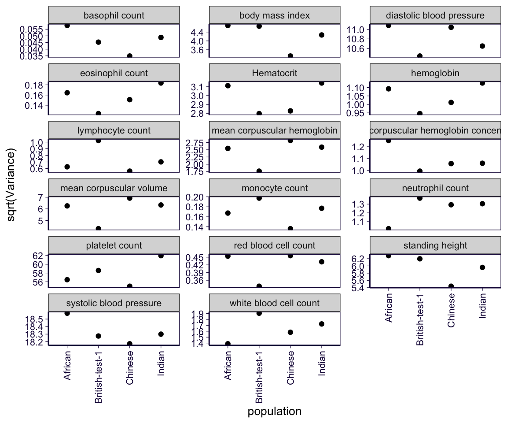
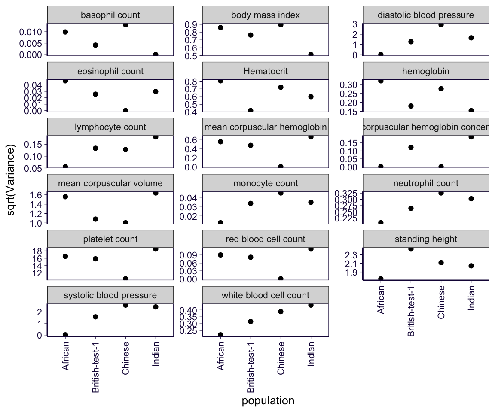
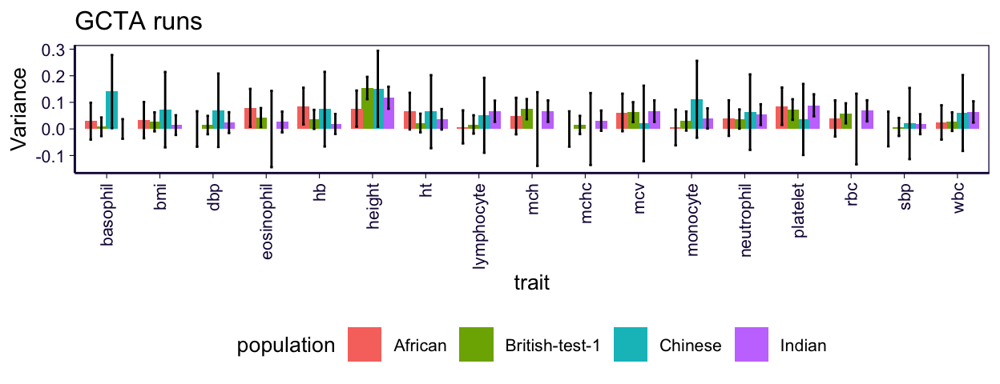
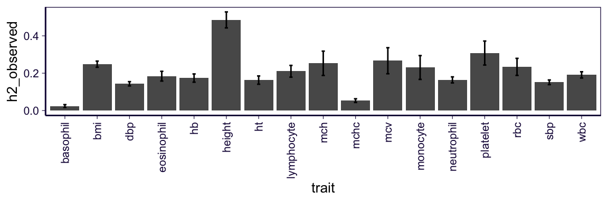

Regulability based on predicted expression (GCTA runs)
library(ggplot2)
library(dplyr)
library(pander)
options(stringsAsFactors = F)
source('../code/rlib_doc.R')
source('https://gist.githubusercontent.com/liangyy/43912b3ecab5d10c89f9d4b2669871c9/raw/8151c6fe70e3d4ee43d9ce340ecc0eb65172e616/my_ggplot_theme.R')
th$panel.border = element_rect(colour = th$axis.line$colour)
theme_set(theme_bw(base_size = 10))1 About
The predicted expression is inverse normalized gene by gene. The phenotype measure and covariates are in their original scales.
2 Load results
Generated by ../submission_scripts/gcta_regulability/
df_trait = read.delim2('../external_data/martin_et_al_2019ng_table_s6_trait_description.tsv', sep = '\t', header = T)
df_info = read.csv('../external_data/martin_et_al_2019ng_table_s6.csv') %>% mutate(trait = tolower(Trait))
traits = tolower(df_trait$short)
df_trait$trait = traits
class(df_info$UKBB.code) = 'character'2.1 Load GCTA runs
result_dir = '/Users/yanyul/Desktop/tmp/gcta_regu'
pops = c('African', 'British-test-1', 'Chinese', 'Indian')
est_list = list()
lrt_list = list()
for(t in traits) {
for(p in pops) {
filename = paste0(result_dir, '/', 'reml_from_gcta_martin_et_al_traits_x_ctimp_Whole_Blood_x_', p, '_x_', t, '.hsq')
df = read.delim2(filename)
class(df$Variance) = 'numeric'
class(df$SE) = 'numeric'
est_list[[length(est_list) + 1]] = df[1:4, ] %>% mutate(population = p, trait = t)
lrt_list[[length(lrt_list) + 1]] = df[5:10, ] %>% mutate(population = p, trait = t)
}
}
est = do.call(rbind, est_list)
lrt = do.call(rbind, lrt_list)
est = est %>% inner_join(df_trait %>% select(trait, long), by = 'trait')
lrt = lrt %>% inner_join(df_trait %>% select(trait, long), by = 'trait')2.2 Heritability from LDSC regression by Neale’s lab
df_ldsc = read.delim2('~/Downloads/ukb31063_h2_topline.02Oct2019.tsv.gz') %>% mutate(ukbb_code = unlist(lapply(strsplit(phenotype, '_'), function(x){x[1]}))) %>% filter(ukbb_code %in% df_info$UKBB.code)
class(df_ldsc$h2_observed) = 'numeric'
class(df_ldsc$h2_observed_se) = 'numeric'
df_ldsc = df_ldsc %>% inner_join(df_info %>% select(UKBB.code, trait), by = c('ukbb_code' = 'UKBB.code'))3 Results
3.1 Sample size
lrt %>% filter(Source == 'n') %>% select(Variance, population) %>% distinct() %>% pander| Variance | population |
|---|---|
| 2835 | African |
| 5000 | British-test-1 |
| 1326 | Chinese |
| 4789 | Indian |
3.2 V(P) (in squared root scale)
V(P) means the phenotypic variation. So it will be phenotype-specific.
est %>% filter(Source == 'Vp') %>% ggplot() + th + geom_point(aes(x = population, y = sqrt(Variance))) +
# scale_y_log10() +
facet_wrap(~long, ncol = 3, scales = 'free_y') +
theme(axis.text.x = element_text(angle = 90, hjust = 1, vjust = 0.5))
3.3 V(G) (in squared root scale)
Phenotypic variation explained by predicted expression.
est %>% filter(Source == 'V(G)') %>% ggplot() + th + geom_point(aes(x = population, y = sqrt(Variance))) +
# scale_y_log10() +
facet_wrap(~long, ncol = 3, scales = 'free_y') +
theme(axis.text.x = element_text(angle = 90, hjust = 1, vjust = 0.5))
3.4 V(G) / V(P)
Proportion of phenotypic variation explained by predicted expression.
d = .8
est %>% filter(Source == 'V(G)/Vp') %>%
ggplot() + th +
geom_bar(aes(x = trait, y = Variance, fill = population), stat = 'identity', , position = position_dodge(d)) +
geom_errorbar(aes(x = trait, group = population, ymax = Variance + 1.95 * SE, ymin = Variance - 1.96 * SE), position = position_dodge(d), width = .2) +
theme(axis.text.x = element_text(angle = 90, hjust = 1, vjust = 0.5)) +
theme(legend.position = 'bottom')
3.5 Heritability from LDSC
df_ldsc %>%
ggplot() + th +
geom_bar(aes(x = trait, y = h2_observed), stat = 'identity') +
geom_errorbar(aes(x = trait, ymax = h2_observed + 1.96 * h2_observed_se, ymin = h2_observed - 1.96 * h2_observed_se), width = .1) +
theme(axis.text.x = element_text(angle = 90, hjust = 1, vjust = 0.5))
3.6 Heritability vs regulability
est %>% filter(Source == 'V(G)/Vp') %>% rename(regu = Variance) %>% inner_join(df_ldsc, by = 'trait') %>%
ggplot() + th +
geom_abline(slope = c(.2, 1), intercept = 0, linetype = 2, color = 'gray') +
geom_hline(yintercept = 0, linetype = 2, color = 'gray') +
geom_vline(xintercept = 0, linetype = 2, color = 'gray') +
geom_point(aes(y = regu, x = h2_observed), alpha = .5, size = 2) +
geom_errorbarh(aes(y = regu, xmin = h2_observed - h2_observed_se * 1.96, xmax = h2_observed + h2_observed_se * 1.96), alpha = .5) +
geom_errorbar(aes(ymin = regu - SE * 1.96, ymax = regu + SE * 1.96, x = h2_observed), alpha = .5) +
coord_equal(ratio = 1) +
facet_wrap(~population, ncol = 2)
4 Plan
Implement and summarize REML results using hail.